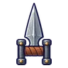
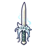

ภูตเถ้าถ่าน
มอนธาตุวิญญาณ Lv 30–43
เจอที่
| แมพ | โซน | Lv | ในแมพ | ภูมิภาค |
|---|---|---|---|---|
| ป่าไหม้ถ่านคุ | ทุ่งเถ้าถ่าน | 35–43 | ≈24 | ที่ราบสูง |
| ทุ่งตอไม้ควันขาว | 30–39 | ≈17 | ที่ราบสูง | |
| ป่าที่ยังไหม้ | 30–39 | ≈17 | ที่ราบสูง | |
| หอรากมืด (Dark Root) | เส้นเลือดถ่านไฟ | 33–42 |
≈ จำนวนที่อยู่ในแมพพร้อมกันโดยเฉลี่ย คิดจากไฟล์เกม (จุดเกิดของแมพ × 4 แบ่งตามสัดส่วนของแต่ละตัว) ตายแล้วเกิดใหม่ที่เดิมใน 22 วินาที · ตอนเล่นออนไลน์เซิร์ฟเวอร์เป็นคนเกิดมอน อาจไม่ตรง
ค่าสถานะตามเลเวล
| Lv | HP | ATK | DEF | MDEF | EXP | Job |
|---|---|---|---|---|---|---|
| 30 | 2,096 | 48–72 | 5 | 10 | 41 | 37 |
| 36 | 3,359 | 63–94 | 6 | 12 | 48 | 43 |
| 43 | 5,523 | 80–121 | 7 | 14 | 56 | 50 |
ตีด้วยธาตุไหนดี
แรงขึ้น: วิญญาณ ×1.25
เบาลง: ไม่มีธาตุ ×0.25
วัตถุดิบที่ดรอป
| ของ | โอกาส | |
|---|---|---|
| ผงเถ้าวิญญาณ | 55% | 1 ชิ้น (15% ได้ 2) |
อุปกรณ์ที่ดรอป (6)
| ของ | โอกาส |
|---|---|
 คาทาร์เหล็กกล้า | 0.25% |
| 0.06% | |
 ดาบคู่กล้วยไม้ผี | 0.06% |
| ปืนพกคู่ผีผ้าห่ม | 0.06% |
| 0.06% | |
| 0.06% |
สกิล
วาร์ป (Lv 25+) · วาร์ป (Lv 60+) · ม่านเวท (Lv 60+)